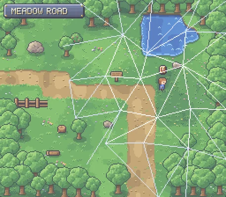
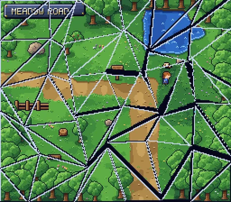
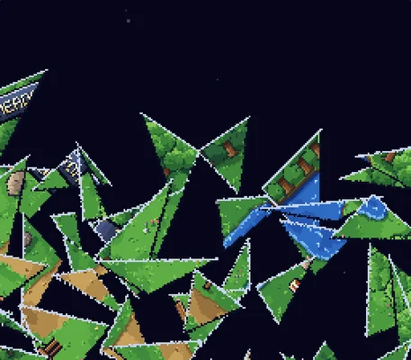
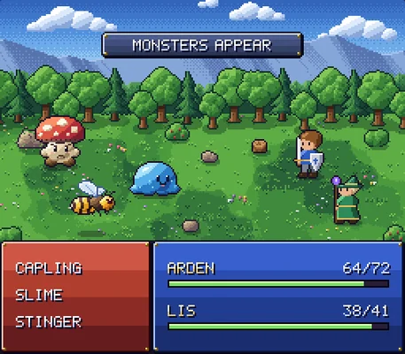

Shatter battle transition
The screen shatters as a battle begins. An add-on for any game.
What it does
When a battle starts, the current frame is captured, cracks from the point of contact and breaks into shards that spin and fall (or swirls, pixelates or irises closed).
Made forturn-based RPG with random or touch encountersmonster battleraction RPG entering an arenawave-based battles (wave change)any game with a title-to-play or map-to-battle switch
Moments
Four moments from the demo

Play from here
Play from here
Play from here
Play from hereTake it home
Hand it to your agent
- Copy the prompt. It is written for a game your agent has never seen.
- Give it the module (
battle-transition.js) and its README. - Play your game. The prompt ends with checks your agent can run.
# Add Shatter battle transition to my game Add the game element below to MY existing game, which you have not seen. It is a finished module file given with this prompt: - `battle-transition.js` (one global, `GameDNA_BattleTransition`), API reference `battle-transition.README.md` README example names are placeholders. ## Shared premises 1. **Include each module file verbatim; never edit it.** Load it with its own `<script src>` before the game's script, or paste it unchanged into its own `<script>` tag. If a module seems to need a change, adapt my game around it and tell me. 2. **Resolution:** keep my game's native resolution and integer scaling as they are. Call module draw functions on my 2D context inside the same transform as my sprites (one module pixel = one game pixel), and keep my game's own image-smoothing setting (off for pixel art, on for smooth or HD games; never switch it). 3. **Time:** drive every module from one fixed 60 Hz step (1000 / 60 ms). If my loop uses variable delta time, accumulate it and run whole steps (at most 250 ms per frame). 4. **Coordinates:** native screen pixels (world minus camera) unless a section says tiles. 5. **Art and names:** anything new you draw or name is original (no real game, character, place or brand names); English UI text; do not restyle my game. 6. **Hook, don't replace:** add calls or change bodies; never delete or rename a function.Open the whole prompt
Works well with
Combine it
Also pairs well with
Bullet-pattern emitterEnemies cast fans, rings, spirals and flowers of bullets, always with a gap to slip through.
Stealth vision conesGuards with view cones that walls block, a suspicion meter and grass to hide in.
Modern damage numbersHits arc out, crits pop, combos roll into one total.
Bouncing damage numbersDamage that pops above the target and bounces.
Hit sparks & spell burstsSlashes, bursts and shockwaves where hits land.
Dissolve-out defeatDefeated enemies crumble away instead of vanishing.